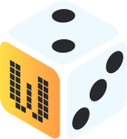

-
Betfury #001

- Site
- Slots
Betfury é uma plataforma de jogos de azar e apostas online baseada em criptomoedas. Lançada em 2019, ela se destaca por oferecer uma variedade de jogos de cassino, como caça-níqueis, jogos de mesa, loteria e muito mais. A plataforma aceita várias criptomoedas populares, incluindo Bitcoin (BTC), Ethereum (ETH), Binance Coin (BNB) e TRON (TRX).
-
Windice #002
- Site
- Slots
Windice é uma plataforma online de jogos baseada em criptomoedas, que oferece uma variedade de jogos de cassino populares, como dados, roleta e caça-níqueis.
-
DuckDice #003
- Site
- Sports
DuckDice é uma plataforma de jogo de dados (dice game) online que usa criptomoedas como Bitcoin, Litecoin, Ethereum, Dogecoin e várias outras moedas digitais. É um site de apostas onde os jogadores podem apostar sua criptomoeda em um jogo de dados virtual para ter a chance de ganhar mais moedas.
-
Primedice #004
- Site
- Sports
Primedice é uma plataforma online de jogos de azar que se concentra principalmente em apostas de criptomoedas, mais especificamente Bitcoin. É um dos primeiros e mais populares cassinos de criptomoedas do mundo.
-
Stake #005
- Site
- Sports
Tem preferência por coisas quentes. Quando chove, diz-se que o vapor jorra da ponta de sua cauda.